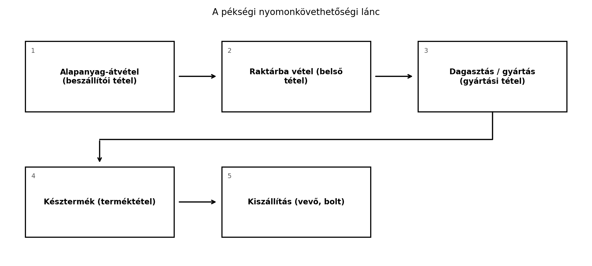

Képszerű helyzet: reggel érkezik egy vevői panasz, hogy a tegnap vásárolt büfékenyérben apró fémdarab volt. A hibaelhárítás nem azzal kezdődik, hogy minden kenyeret kidobunk, hanem azzal, hogy megkeressük: melyik gyártási napon, melyik tételből, melyik liszt- és egyéb alapanyag-tételből készült? Ha ezt a láncot perceken belül vissza tudjuk fejteni, akkor célzottan intézkedhetünk. Ha nem, akkor csak sötétben tapogatózunk, és nagyobb kárt okozhatunk, mint maga a hiba.
Ez az alfejezet a nyomonkövethetőség (traceability) és a problémakezelés alapjait tanítja meg: hogyan kell egy terméket a tételszámából visszavezetni az alapanyagokig, hogyan kell a hibát dokumentálni, és mi a teendő termékkivonás vagy termékvisszahívás esetén.
A nyomonkövethetőség nemcsak hatósági követelmény, hanem a pékség saját érdeke is: ha pontosan tudjuk, melyik lisztből, élesztőből, sóból, magból, adalékanyagból készült egy tétel, akkor egy hibát kis körben tudunk kezelni, és elkerüljük a felesleges veszteséget.
Definíció. Nyomonkövethetőségnek nevezzük azt a képességet, hogy egy élelmiszer útját a gyártás minden szakaszában azonosítható módon, dokumentáltan követni tudjuk. A sütőiparban ez azt jelenti: tudjuk, hogy a kész termék melyik gyártási tételből származik, ahhoz melyik nyersanyag- és csomagolóanyag-tételeket használtunk fel, és melyik vevőhöz, rekeszbe, kiszállítási körbe került.
Definíció. Tétel (batch): az azonos időben, azonos körülmények között, azonos alapanyagokból gyártott, azonos megjelölésű termékek meghatározott mennyisége. A tétel lehet egy dagasztás, egy kocsisor, egy sütési ciklus vagy egy napi gyártási sor, ahogy a pékség saját technológiai lapja és gyártmánylapja meghatározza.
Szabály. A nyomonkövetés alapelve a „egy lépést előre, egy lépést hátra” elv: minden gazdálkodó egység legalább azt tudja, hogy kinek adta tovább a terméket (előre), és kitől vette az alapanyagot (hátra). A pékségnek ezért legalább egy lépést előre és hátra kell látnia; a teljes láncot a hatóság a nyilvántartások alapján tudja összerakni.
Definíció. Gyártási napló (vagy gyártási jegyzőkönyv): olyan üzemi feljegyzés, amely rögzíti az adott tétel legfontosabb technológiai és higiéniai adatait: a felhasznált alapanyag-tételeket, a receptúrától való eltérést, a technológiai időket, a mérési eredményeket (tészta- és sütési hőmérséklet, dagasztási idő, kelesztési idő, sütési idő), a kezelő személyt, az esetleges eltéréseket. A pontos gyártási napló a nyomonkövetés kulcsa.
Definíció. Termékvisszahívás (recall): olyan intézkedés, amelynek célja a késztermékek visszavonása a fogyasztóktól, ha a termék élelmiszer-biztonsági szempontból kockázatot jelent. A termékkivonás (withdrawal) a forgalomból való kivonást jelenti, jellemzően a kereskedelemből; a kettőt a gyakorlatban gyakran együtt emlegetik, de a visszahívás tágabb feladat: a fogyasztóig is el kell érnie az intézkedésnek.
Definíció. Problémakezelő lap (panaszkezelési lap): a panasz vagy rendellenesség formális, írásos rögzítése: mi történt, mikor, milyen tételnél, ki észlelte, mi a lehetséges ok, milyen azonnali intézkedést hoztak, és milyen hosszú távú megelőző intézkedés (CAPA) szükséges.
A pékségi nyomonkövetés öt alappillére:
A nyomonkövetés tehát nem csupán egy füzet, hanem élő, napi gyakorlat.

Higiénia. A nyomonkövethetőségi azonosítókat a munka közben is tisztán, olvashatóan kell kezelni: a lisztes, vizes, zsíros kézzel megfogott címke olvashatatlanná válhat. A termékcímkét, tételcímkét ne a földre, ne a mosogató szélére tegyük; a gépi nyomtatás elmosódása téves visszahíváshoz vezethet.
HACCP. A nyomonkövethetőség elsősorban jó gyártási gyakorlat (GMP) és jó higiéniai gyakorlat (GHP), nem feltétlenül kritikus szabályozási pont (CCP). Ugyanakkor a HACCP-rendszer egyik alapja: ha egy mérési vagy monitoringadat hibás, akkor a probléma behatárolását a tételazonosítás teszi lehetővé. A CCP-lapokon ezért mindig szerepelnie kell a tételszámnak, hogy egy sütési hőmérséklet-, maghőmérséklet- vagy allergén-ellenőrzési adat visszakereshető legyen.
Példa. Egy pékségben panasz érkezik, hogy a 2025. március 16-i keltezésű, „tökmagvas büfékenyér” tételből több darab keserű, avas utóízű. A pék feladata: vezesse vissza a terméket a felhasznált liszt- és magtételig.
Kézzel követhető lépések:
K-20250316-02 (év-hó-nap-sorszám). Ellenőrizze a gyártási
naplóban, mit jelent a kód.L-20250312-05 és a tökmag tételazonosítója
T-20250310-11. A raktári nyilvántartás mutatja, hogy ezek a
tételek a 2025. március 12-i és 10-i szállítmányból származnak, a
beszállító által megadott tételszámmal.Ez a lánc legfeljebb 10 perc (tanulási példa és üzemi célérték, nem jogszabályi határidő; ellenőrizendő: üzemi HACCP-terv, vevői szabvány), ha a naplókat és címkéket naprakészen vezettük.
Számítási ellenőrzés. Nincs bonyolult képlet, de a gyakorlatban a tételszám visszakeresésekor egyeztetni kell a mennyiségeket: ha a gyártási napló szerint 120 kg liszt ment be a dagasztásba, akkor a raktári kivételezési lapon is 120 kg tételnek kell állnia. Az összegezés: a felhasznált összes anyag (a vizet is beleértve) tömege, csökkentve a dagasztási veszteséggel, adja a tésztatömeget; az eltérés vagy hiány feljegyzési hibára utal. A tömegszámításokat a Tésztahozam, termékhozam, kihozatal és veszteségek alfejezetben visszük tovább.
A panasz vagy rendellenesség dokumentálása azért fontos, mert emlékezetből nem lehet hatékonyan és bizonyíthatóan javítani. A problémakezelő lap célja, hogy a hibát objektíven rögzítse, és a javító intézkedést nyomon lehessen tartani.
Gyakorlati útmutató – elveszett tételazonosító pótlása és panaszkezelés
Cél: egy vevői panasz vagy belső észlelés alapján a termék visszavezetése, a hiba rögzítése, a helyesbítő és megelőző intézkedés meghatározása.
Eszközök és anyagok: gyártási napló, raktári bevételezési lapok, szállítólevelek, panaszkezelési lap (papír vagy táblázat), toll, esetleg fényképezőgép a bizonyítékok dokumentálásához, zárható tasak a termékminta elhelyezéséhez.
Higiénia. A munkavégzés előtt tiszta munkaruha, hajháló, a kéz mosása. A reklamált terméket ne keverjük más termékek közé; ha az élelmiszer-biztonsági vizsgálathoz kell, hűtve tároljuk, és ne nyissuk ki feleslegesen. A panaszos darabot címkézzük fel.
Gépbiztonság. Ha a visszavezetéshez raktári silólétrára, állványra kell felmenni, azt csak a munkavégzéshez szükséges biztonsági előírások és képzés birtokában szabad; a mozgó, forgó, magasban lévő gépelemeket ne közelítsük meg gépi üzem közben. Dokumentációt asztalnál, tiszta, csúszásmentes felületen vezessünk.
Lépések:
Dokumentálás. A panaszkezelő lap, a visszahívási jegyzőkönyv, a hatósági bejelentés és a vevőtájékoztató levelezés mind része a későbbi auditnak és a hatósági ellenőrzésnek.
Előírás. Az Európai Unió élelmiszerjogi alapelvei (178/2002/EK rendelet, ellenőrizendő a hatályos szöveg) megkövetelik a nyomonkövethetőséget és a nem biztonságos élelmiszer forgalomból történő kivonását, illetve visszahívását. A magyar élelmiszerlánc-felügyeleti rendszerben a hatóság (NÉBIH, területi szervei) felé jelenteni kell a nem biztonságos termék eseményét (ellenőrizendő: a hatályos bejelentési és hatósági eljárási rend). A pontos kontaktus, bejelentési űrlap, reakcióidő és a visszahívási hirdetmény tartalma a mindenkor hatályos szabályozástól és a pékség saját visszahívási tervétől függ; ezt a könyv nem helyettesíti.
A gyakorlatban a visszahívás lépései:
HACCP. A termékvisszahívás végső biztonsági háló. A HACCP-tervben ezért előre meg kell határozni: ki indítja a visszahívást, ki lép kapcsolatba a hatósággal, ki kezeli a vevői hívásokat, melyik dokumentumot kell kitölteni, és hol tárolják a tételazonosítókat. A visszahívási próba (évente legalább egyszer; ellenőrizendő: üzemi HACCP-terv, vevői szabvány) élesben teszteli, hogy a nyilvántartásból egy tétel valóban visszakereshető-e.
Figyelem. A termékvisszahívásnál mindig a fogyasztó egészsége az első. A visszahívás elmulasztása, késleltetése vagy az ok eltitkolása súlyos élelmiszerjogi és büntetőjogi következményekkel járhat (ellenőrizendő: a hatályos szankciók).
Egy kis pékség kalácsrendelést kapott egy rendezvényre. A technológiai lap szerint a kalács diót nem tartalmazott, ezért allergénsorában csak glutén, tojás és tej szerepelt. Néhány óra múlva az egyik vásárló jelezte, hogy a termékben diószemcsét talált. A pékek kinyitották a gyártási naplót; abból kiderült, hogy a kalácsot ugyanabban a dagasztóban készítették, mint egy diós süteményt, és a dagasztócsésze ürítése után a tál alján maradt diós tésztamaradék a kalácsba keveredett. A panaszlapon rögzítették a tételszámot, a dió-allergén keresztszennyeződés kockázatát; a terméket azonnal visszahívták a rendezvényről, értesítették a vásárlókat, és a visszahívási terv szerint bejelentették a hatóságnak (ellenőrizendő: bejelentési rend). A megelőző intézkedés az lett, hogy a kalácsot mindig más gépen és leállított, megtisztított berendezéssel készítik, allergén tisztítási protokollt vezettek be, a diós terméket mindig a műszak végén gyártják, előtte és utána dokumentált allergéntisztítással. A „nyomokban diót tartalmazhat” figyelmeztetést csak kockázatértékelés alapján alkalmazzák, mert nem helyettesíti a keresztszennyeződés megelőzését. Ez az eset mutatja, hogy a nyomonkövetés nélkül a visszahívás akár minden termék elvesztéséhez vezethetett volna, így azonban célzottan, gyorsan sikerült kezelni.
A nyomonkövetési rendszer jósága kétféleképpen ellenőrizhető:
A minőség akkor jó, ha a dokumentumok zártak: nincs olyan dagasztás, amelyhez ne tartozna liszttétel, nincs olyan átvett nyersanyag, amelyhez ne tartozna szállítólevél, és a mennyiségek egyeznek.
1. feladat (A) Sorolja fel a pékségi nyomonkövethetőségi lánc 5 fő állomását!
2. feladat (A) Mi a tételszám szerepe a gyártási naplóban? Miért kell ragaszkodni a tételszám használatához?
3. feladat (B) Egy pékségben a „rozsos kenyér”
tételt vissza akarjuk vezetni a liszthez. A gyártási naplóban a
rozsliszt tételazonosítója RL-20250313-04; a raktári
nyilvántartás szerint ez a 2025. március 13-i szállítmányból való,
beszállítói tételszám RL-88412, mennyiség 500 kg. A napló
szerint a dagasztás 120 kg rozslisztet használt. Ellenőrizze, hogy a
raktári kivételezési lapon is 120 kg áll-e, és magyarázza, miért fontos
az egyezés!
4. feladat (B) Egy vevői panasz érkezik: a „szezámmentes” felirattal csomagolt natúr rúdon szezámmagot talált, és szezámallergiás gyermekénél tünetek jelentkeztek. Írja le a panaszkezelési lap kitöltésének lépéseit, és adja meg a helyesbítő és a megelőző intézkedést!
5. feladat (C) Egy pékségben több dagasztás készült ugyanazon a napon, de a készülő briósokhoz használt tojásos tészta után a dagasztóban maradék tészta volt. A következő, „tojásmentes” kalácstészta dagasztásakor a maradék tészta allergén keresztszennyeződést okozott. Elemezze: milyen nyomonkövethetőségi és HACCP-rendszerbeli hibák történtek, és milyen intézkedéseket vezessen be a pékség?
6. feladat (D) Végezzen nyomonkövetési próbát a pékségben vagy a tanpékségben: válasszon ki egy késztermék-tételt, mérje meg, mennyi idő alatt tudja az alapanyag-tételeket visszakeresni. Dokumentálja az eredményt, és ha 10 percnél hosszabb, javasoljon javítást!
Önellenőrzés – válaszok
Feladatok megoldásai
1. feladat megoldása (A) A lánc 5 állomása: (1) alapanyag-átvétel beszállítói tétellel, (2) raktárba vétel belső tételazonosítóval, (3) dagasztás/gyártás gyártási tétellel, (4) késztermék tételazonosítása, (5) kiszállítás vevőhöz/bolthoz.
2. feladat megoldása (A) A tételszám azonosítja az adott gyártásból származó termékcsoportot; a gyártási naplóban összekapcsolja a felhasznált alapanyagokkal, a technológiai paraméterekkel és a mérésekkel. Ha nincs tételszám, a visszahívás és a hibabehatárolás nem lehetséges.
3. feladat megoldása (B) A raktári kivételezési lapon is 120 kg rozslisztnek kell szerepelnie, mert a felhasznált mennyiségnek egyeznie kell a bevételezett és kivételezett mennyiséggel. Ha a raktári nyilvántartásban 500 kg van a tételből, akkor a kivételezés után (500−120)=380 kg-nak kell maradnia. Az egyezés hiánya jelzi a nyilvántartási hibát, és megnehezíti a tétel visszavezetését.
4. feladat megoldása (B) A panaszkezelési lap kitöltése: (1) panasz rögzítése – ki, mikor, melyik termék, mi a hiba, mennyiség; (2) tételazonosítás a csomagolásról; (3) gyártási napló ellenőrzése – a szezámmentes tételhez használt eszközök elkülönítésének ellenőrzése; (4) megmaradt termék vizsgálata; (5) helyesbítő intézkedés: a szezámos és szezámmentes termékek gyártásának időbeli vagy térbeli elkülönítése, a gépek allergén takarítása, a termék tételének visszahívása, és mivel jelöletlen allergénről van szó, a hatóság (NÉBIH/járási hivatal) értesítése (ellenőrizendő: a bejelentési kötelezettség pontos szabálya); (6) megelőző intézkedés: külön gyártósor, dedikált eszközök, címkefigyelmeztetés.
5. feladat megoldása (C) A hibák: (a) a dagasztóban maradt tojásos tészta a következő tételbe keveredett, ami allergén keresztszennyeződést okozott; (b) a gyártási rend nem különítette el a tojásos és tojásmentes termékeket, (c) a tisztítási jegyzőkönyvből hiányzott a tételváltáskori ellenőrzés, (d) a termék „tojásmentes” felirata nem volt jogos. Intézkedések: a dagasztót tételváltáskor teljesen le kell állítani és ki kell tisztítani; a gyártási sorrendet úgy kell alakítani, hogy a tojást nem tartalmazó termékek először vagy külön gépen készüljenek; a tisztítást dokumentálni kell; a „tojásmentes” állítást csak validált tisztítás és igazolás mellett szabad használni, különben el kell hagyni. A „nyomokban” figyelmeztetés csak akkor alkalmazható, ha a kockázatértékelés szerint a megelőzés mellett is fennmarad a kockázat; ez nem helyettesíti a tisztítást.
6. feladat megoldása (D) A próba eredményét a tanuló rögzíti; ha 10 percnél hosszabb, a nyilvántartási hiányt ki kell javítani (pl. hiányzó gyártási napló, összekevert tételcímkék, nem naprakész raktári lap). Az értékelési szempont: a visszakeresés gyors és dokumentált legyen, a mennyiségek egyezzenek.
A nyomonkövethetőség azt jelenti, hogy a pékség minden termékét a gyártási tételszámából vissza tudja vezetni a felhasznált alapanyag-tételekig, és „egy lépést előre” is tudja, hogy a termék hová került. Ennek alapja a gyártási napló és a belső tételazonosítás: az átvételnél rögzíteni kell a beszállítói tételszámot, a raktárban a belső tételt, a dagasztásnál a felhasznált tételeket, a készterméken a terméktételt, a szállításkor a vevőt. A panasznál problémakezelési lapot kell kitölteni, amely rögzíti a panaszt, a kivizsgálást, a helyesbítő és megelőző intézkedést. Ha a termék biztonsági kockázatot jelent, termékkivonást vagy termékvisszahívást kell kezdeményezni, és a hatóság felé jelenteni (ellenőrizendő: a hatályos bejelentési rend). A nyomonkövetés a HACCP-rendszer alapja, mert anélkül a kritikus pontok adatai sem visszakereshetők. Továbbvitt eredmények: ezeket a tételazonosítási, panaszkezelési és dokumentálási módszereket használjuk az Allergének kezelése a pékségben alfejezetben az allergénnyomonkövetéshez, a Rekeszkezelés, árukiadás, utólagos töltés és bevonatok alfejezetben az áru visszavételéhez, valamint a Mérési eredmények dokumentálása és minőségi eltérések kezelése alfejezetben a minőségi eltérések nyilvántartásához.
A szöveg hivatkozik az Európai Unió élelmiszerjogi alapelveire (178/2002/EK rendelet), a magyar élelmiszerlánc-felügyeleti jogszabályra, valamint a NÉBIH hatósági eljárásaira. A kiadás előtt ellenőrizendő: a rendeletek és a magyar törvény hatályos szövege, a kapcsolódó bejelentési és visszahívási űrlapok, a termékvisszahívási határidők és a hatósági értesítések pontos tartalma. A pékségben érvényes tételszámképzési mód, a belső tételazonosítók és a nyomonkövetési próba időkorlátja üzem-specifikus, ezért a mindenkori üzemi utasítást és a HACCP-tervet kell figyelembe venni (ellenőrizendő: üzemi dokumentumok).